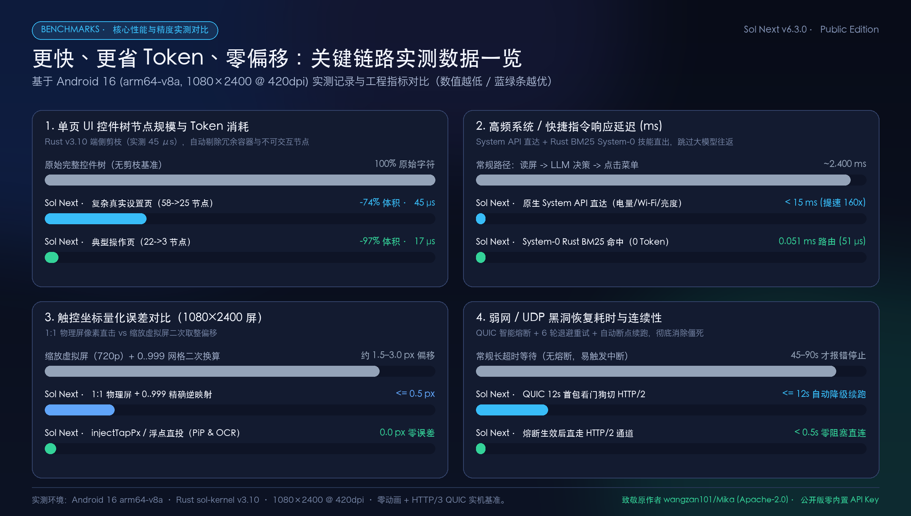
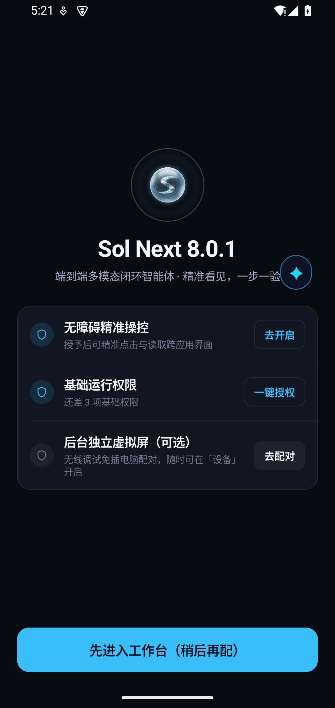
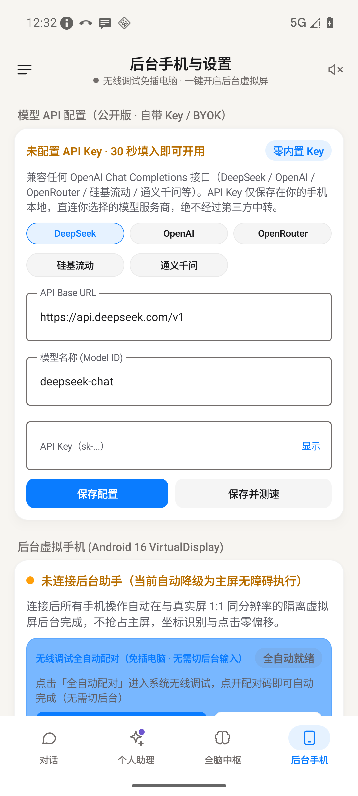
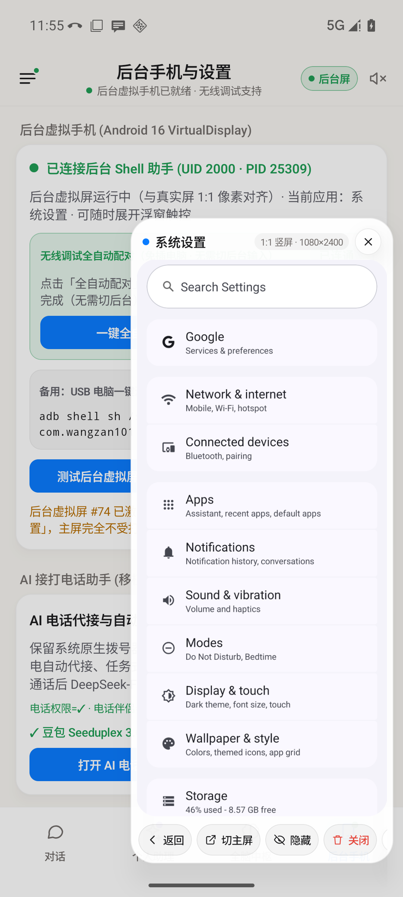
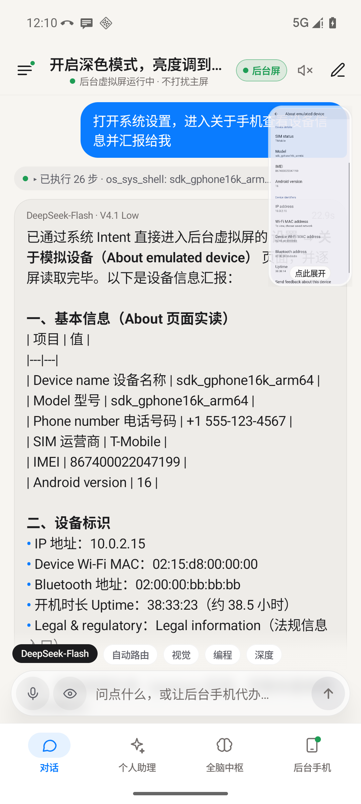
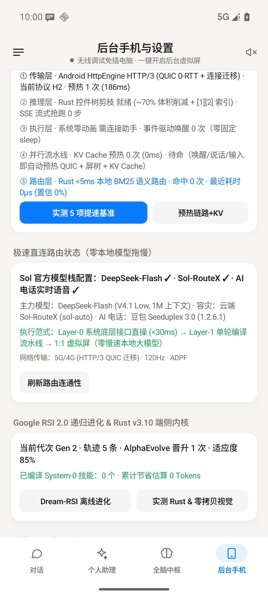

站在 Mika 的肩膀上，
重构手机 AI 助理的速度与稳定性极限
Sol Next 是在开源项目 Mika 的启发与基础上打造的新一代安卓 AI 助理：以 Rust 原生剪枝内核、1:1 物理屏克隆后台虚拟手机、HTTP/3 QUIC 0-RTT、64 轮防中断自愈引擎 与 运营商级 AI 接打电话驾驶舱，带来零偏移、零无故暂停的旗舰体验。
真诚致敬 Mika 原作者 @wangzan101
Sol Next 是在优秀开源项目 wangzan101/Mika（Apache-2.0，Trendshift GitHub Kotlin 日榜 & 周榜 #1）的启发与架构基础上改造演进而来。
Mika 开创了安卓端「独立后台虚拟屏执行」「无线调试免电脑配对」与「保留原生拨号器的伴侣 AI 通话」的优雅范式。Sol Next 在继承这一优秀方向的同时，聚焦真机实战中的延迟、精度、小米 HyperOS 长任务断流与 AI 电话完整度，进行了从 Rust 原生内核到上层体验的全栈深度重构。
开源渊源声明（Apache-2.0）
• 原项目：github.com/wangzan101/Mika
• 原版优势：内置桌面级浏览器、独立 Linux 沙箱（Python/Node）、MCP 电脑联动与丰富 App 知识库
• 公开版独立包名：ai.sol.next，可与原版 Mika 同机共存、互不冲突
4 组工程对比图 + 完整能力矩阵
点击下方标签页自由切换查看架构演进、实测延迟、1:1 虚拟屏精度与 8 维客观能力雷达图。




| 核心维度 | Mika 原版（wangzan101/Mika） | ✦ Sol Next v6.3 公开版 |
|---|---|---|
| 端侧加速内核 | Kotlin / JVM 控件树遍历 | Rust v3.10 原生 JNI：UI 树压缩 -74%~-97%（17–45 μs）、BM25 路由 51 μs、SSE 增量抢跑解析 80 μs |
| 后台虚拟屏精度 | 开创 VirtualDisplay 隔离运行（缩放尺寸 + 网格换算） | 1:1 复刻物理主屏 Display 0（分辨率/DPI/刷新率 100% 一致，scale=1.0），injectTapPx 0.0px 零漂移 + TOOL_TYPE_FINGER |
| 网络与弱网恢复 | 标准 HTTP/2 请求模型 | Android 14–16 原生 HTTP/3 QUIC 0-RTT + 12s 首包看门狗熔断切 H2 + 6 轮退避重试 + 自动断点续跑 |
| 长任务防暂停 | 基础超时与手动继续 | 64 轮防中断自愈：隔离 TimeoutCancellationException 伪取消、进程内 WakeLock+WifiLock 双保活、小米 HyperOS 零误拦与三级返回兜底 |
| AI 接打电话 | 开创非默认拨号器 Telecom 伴侣框架 | 完整运营商级 AI 电话驾驶舱：豆包 / OpenAI 实时语音（BYOK）、3×4 DTMF 拨号盘、免提切换、多路隔离、随时人工接管与纪要重试 |
| 主动个人助理 | 记忆与定时任务 | 端侧 KeyStore 加密全维感知：重要通知与低电量主动提醒，后台代办顺序排队绝不打断主任务 |
| 内置浏览器 & 沙箱 | Mika 原版优势：内置桌面级浏览器、Linux 沙箱、MCP 联动与社区 App 知识库 | 聚焦原生 App 极速直操与轻量化零冗余（独立包名 ai.sol.next，可与原版 Mika 共存） |
Android 16 实拍：纯净无内置 Key、零偏移虚拟屏与全栈驾驶舱
以下所有界面均为 Android 16 (1080×2400 @ 420dpi) 实机运行截屏，所见即所得。

公开版零内置 Key 欢迎页
清晰透明提示不内置任何 API Key，一键直达本机 BYOK 配置。

30 秒 BYOK 模型配置
内置 DeepSeek / OpenAI / OpenRouter / 硅基流动 / 通义千问预设，保存即测速生效。

1:1 原生虚拟屏展开触控
实测 1080×2400 @ 420dpi 零缩放，720p 清晰浮窗随时手控接管。

26 步自主任务全程零暂停
后台独立翻屏读取系统设备全量信息并输出结构化摘要，主屏零打扰。

AI 接打电话驾驶舱 + DTMF
保留原生拨号器，实时计时、静音托管、3×4 语音菜单拨号盘与一键接管。

全脑中枢 · Rust/QUIC 遥测
直观查看 HTTP/3 QUIC、Rust 剪枝压缩率、System-0 路由与零动画加速。
纯公开零内置 Key，完全掌控在你手中
不需要私有服务器、不需要注册账号，你的 API Key 永远只保存在你的手机本地。
安装公开版 APK
下载 Sol-Next-v6.3.0-public-arm64.apk（独立包名 ai.sol.next），经零密钥安全审计，不含任何内置凭据。
填入自有模型 API Key
进入「后台手机」顶部 BYOK 卡片，一键选 DeepSeek / OpenAI / OpenRouter 等预设，填 Key 点击「保存并测速」即可立即使用。
免电脑开启 1:1 后台虚拟屏
点击「一键全自动配对」完成无线调试配对，瞬间解锁 1:1 后台虚拟手机、零动画加速、零无障碍直通与 AI 电话伴侣。
立即体验 Sol Next v6.3 公开版
100% 开源透明 · 零内置 API Key · 零私有中转服务器 · 致敬 wangzan101/Mika（Apache-2.0）